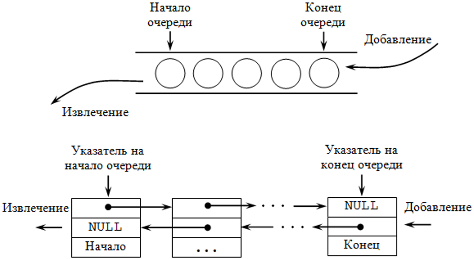
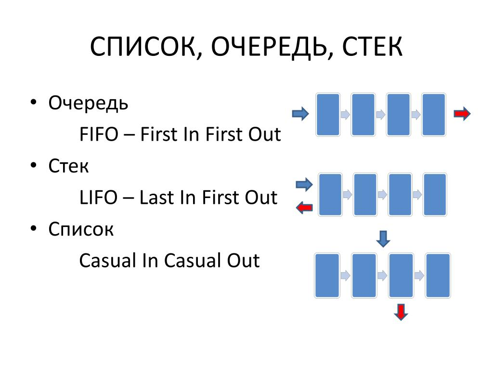
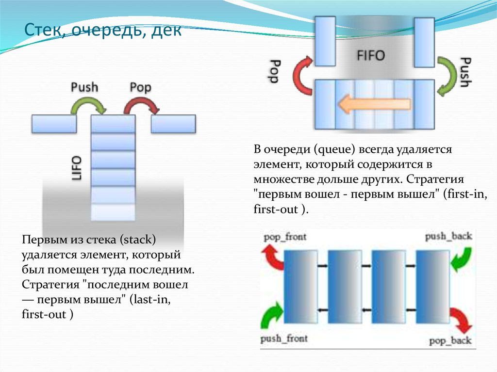

| Тема 4. Очередь Queue. | ||
| Назад | ||
|
Оередь используется для просмотра объектов коллекции по принципу «первым пришел, первым ушел» (FIFO). Он используется, когда вам нужен доступ к элементам по принципу «первым пришел, первым ушел». Это неуниверсальный тип коллекции, который определяется в пространстве имен. Он используется для создания динамической коллекции, которая увеличивается в соответствии с потребностями вашей программы. В очереди можно хранить элементы одного и того же типа и разных типов. Как правило, это, в свою очередь, полезно, когда вы получаете доступ к этой информации таким же образом, как они хранятся в коллекции, и это временное храниОлище для хранения данных.System.Collections
 Принцип работы списка, очереди и стека.

 Класс Queue<T> представляет обычную очередь, которая работает по алгоритму FIFO ("первый вошел - первый вышел"). Как создать очередь? Класс очереди имеет четыре конструктора , которые использовались для создания очереди, а именно:
Создание очередиДля создания очереди можно использовать один из трех ее конструкторов. Прежде всего можно создать пустую очередь: Queue При создании пустой очереди можно указать емкость очереди:
Также можно инициализировать очередь элементами из другой коллекции или массивом: ar employees = new List Для перебора очереди можно использовать стандартный цикл foreach. Для получения количества элементов в очереди в классе определено свойство Count. Методы Queue
У класса
Посмотрим применение очереди на практике: var people = new Queue Стоит отметить, что если с помощью методов Peek или Dequeue мы попытаемся получить первый элемент очереди, которая пуста, то программа выдаст исключение. Соответственно перед получением элемента мы можем проверять количество элементов в очереди: if(people.Count > 0)
{
var person = people.Peek();
people.Dequeue();
}
Либо можно использовать пару методов (этих методов в новой версии языка нет):
Применение методов: var people = new Queue Очереди - довольно часто встречаемая стуктура в реальной жизни. Например, очередь пациентов на прием к врачу. Реализуем данную ситуацию: var patients = new Queue Здесь класс врача - класс Doctor в методе TakePatients принимает очередь пациентов в виде объектов Person. И пока в очереди есть объекты извлекает по одному объекту. Консольный вывод: Осмотр пациента Tom Осмотр пациента Bob Осмотр пациента Sam Доктор закончил осматривать пациентовКонструкторы Класс Queue имеет четыре конструктора для создания экземпляров новых коллекций. Первый является самым базовым, без параметров. Новая, пустая очередь генерируется с емкостью для хранения до тридцати двух элементов. Если добавляется тридцать третий элемент, емкость очереди автоматически удваивается. Она удваивается снова каждый раз при превышении размера. Queue myFifo = new Queue();Если максимальное число элементов, которые будут храниться в очереди, известно до создания коллекции, более эффективно объявить требуемую емкость во время создания экземпляра. Если размер занижен и заявленная вместимость превышена, то вместимость все равно будет удвоена для размещения дополнительных предметов. Чтобы объявить начальную емкость очереди, передайте ее конструктору в виде целочисленного параметра. Queue myFifo = new Queue(25);По умолчанию каждый раз, когда емкость очереди превышена, то она удваивается. Это удвоение происходит потому, что стандартный коэффициент роста очереди равен 2. Этот множитель можно настроить при создании экземпляра очереди, передав второй параметр float, содержащий коэффициент роста между единицей и десятью. При превышении емкости текущий размер умножается на это значение. В следующем примере создается очередь с начальной емкостью десять элементов и коэффициентом роста 1,5. Queue myFifo = new Queue(10, 1.5F);Конечный конструктор разрешает создание предварительно заполненной очереди. Если у вас есть коллекция элементов в классе, который реализует интерфейс ICollection, это может использоваться в качестве исходных данных для новой очереди. Каждый элемент коллекции добавляется в очередь в том порядке, в котором обычно перечисляется исходная коллекция. ArrayList myList = new ArrayList(); myList.Add("String 1"); myList.Add("String 2"); Queue myFifo = new Queue(myList);Enqueue Структуры очередей позволяют добавлять новые элементы в конец очереди и извлекать существующие элементы из передней части. Чтобы добавить новый элемент в конец очереди, вызывается метод Enqueue. Метод имеет один параметр, содержащий объект для добавления в очередь. Queue waiting = new Queue(); waiting.Enqueue("Mrs Brown"); waiting.Enqueue("Mr Green"); waiting.Enqueue("Miss Black"); Console.WriteLine("Count: {0}", waiting.Count); // Outputs "Count: 3"Dequeue Вы можете извлечь элементы из очереди с помощью метода Dequeue. Он возвращает элемент, отображающийся в передней части очереди в качестве объекта, который можно привести к правильному типу. В следующем примере метод ToString используется для выполнения преобразования, когда три элемента добавляются и затем извлекаются из очереди. Обратите внимание, что порядок извлечения совпадает с порядком, в котором были добавлены элементы. Queue waiting = new Queue(); waiting.Enqueue("Mrs Brown"); waiting.Enqueue("Mr Green"); waiting.Enqueue("Miss Black"); while (waiting.Count != 0) { string next = waiting.Dequeue().ToString(); Console.WriteLine(next); } /*вывод Mrs Brown Mr Green Miss Black */Peek Вы можете получить элемент в начале очереди, не изменяя содержимое коллекции. Метод Peek аналогичен методу Dequeue, но при получении следующего элемента он также остается в начале очереди. Queue waiting = new Queue(); waiting.Enqueue("Mrs Brown"); waiting.Enqueue("Mr Green"); waiting.Enqueue("Miss Black"); string next = waiting.Peek().ToString(); Console.WriteLine(next); // вывод "Mrs Brown" Console.WriteLine("Count: {0}", waiting.Count); // вывод "Count: 3"Другие методы Queue В дополнение к методам обработки очереди FIFO, класс Queue предоставляет другие функциональные возможности для доступа к коллекции. Они улучшают структуру данных с поведением, аналогичным поведению некоторых других типов коллекций и списков. Clear Метод Clear используется для очистки содержимого очереди. Метод не требует никаких параметров. Queue waiting = new Queue(); waiting.Enqueue("Mrs Brown"); waiting.Enqueue("Mr Green"); waiting.Enqueue("Miss Black"); Console.WriteLine("Count: {0}", waiting.Count); // Outputs "Count: 3" waiting.Clear(); Console.WriteLine("Count: {0}", waiting.Count); // Outputs "Count: 0"TrimToSize По мере увеличения количества элементов в коллекции очередей размер очереди также может увеличиваться. Используя стандартные настройки, каждый раз, когда емкость коллекции превышена, она удваивается. По мере опорожнения очереди ее емкость не уменьшается. Это может привести к большому объему потерянной памяти для больших очередей. Чтобы уменьшить это, очередь можно обрезать, чтобы освободить память, выделенную для пустого пространства, используя метод TrimToSize. Поскольку класс Queue не включает свойство, возвращающее текущую емкость,трудно показать эффект выполнения метода TrimToSize. Однако этот метод можно использовать, как показано в следующем примере: Queue waiting = new Queue(); waiting.Enqueue("Mrs Brown"); waiting.Enqueue("Mr Green"); waiting.Enqueue("Miss Black"); waiting.TrimToSize();Contains Иногда вам нужно будет определить, существует ли указанный элемент в очереди без снятия очереди с каждого элемента, чтобы найти его. Метод Contains решает эту проблему, возвращая логическое значение, указывающее, находится ли предоставленный объект в очереди. Queue waiting = new Queue(); waiting.Enqueue("Mrs Brown"); waiting.Enqueue("Mr Green"); waiting.Enqueue("Miss Black"); Console.WriteLine(waiting.Contains("Mrs Brown")); // "True" Console.WriteLine(waiting.Contains("Mrs White")); // "False"ToArray Существует еще один метод, который позволяет считывать содержимое очереди, не нарушая порядок элементов. Аналогичным образом, как и в случае с ArrayList, содержимое очереди может быть извлечено в массив объектов. Queue waiting = new Queue(); waiting.Enqueue("Mrs Brown"); waiting.Enqueue("Mr Green"); waiting.Enqueue("Miss Black"); object[] array = waiting.ToArray(); foreach (object o in array) { Console.WriteLine(o.ToString()); } /* Mrs Brown Mr Green Miss Black */Создание потокобезопасной оболочки очереди В предыдущей статье, посвященной интерфейсам коллекций, была описана концепция потокобезопасной синхронизированной коллекции. Для создания потокобезопасной очереди с помощью статического метода Synchronized создается синхронизированная коллекция обертки. Queue myCollection = new Queue(); Queue myThreadSafe = Queue.Synchronized(myCollection); Console.WriteLine(myThreadSafe.IsSynchronized); // "True"
|
||
| Конспект подготовлен Бакулиным А. М. 2022 год. | ||